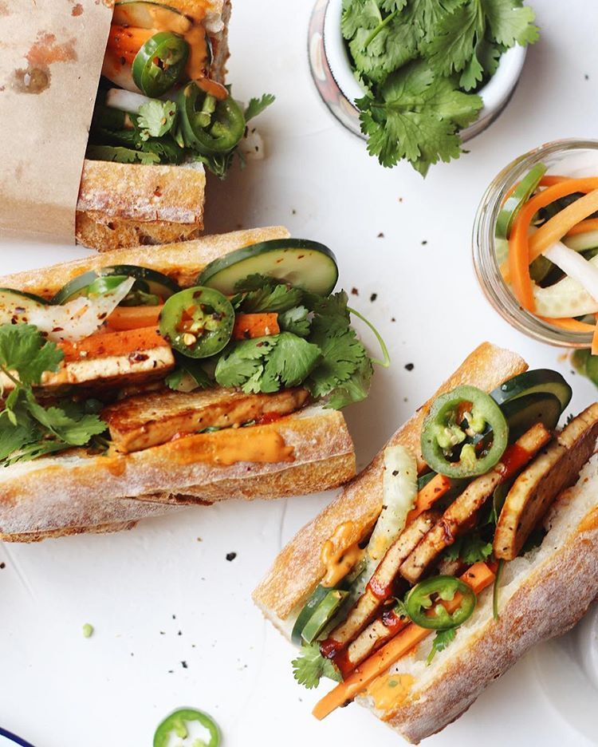
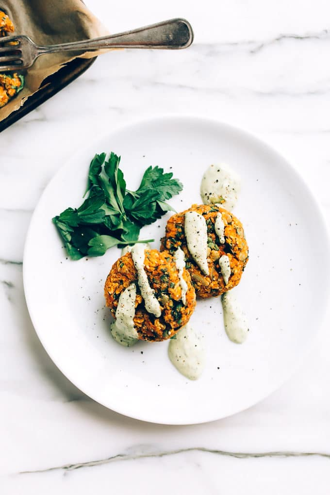

Vegan banh mi

- 150g leftover raw veggies , (such as red cabbage and carrots), shredded
- 3 tbsp good-quality vegan white wine vinegar
- 1 tsp golden caster sugar
- 1 long French baguette
- 100g hummus
- 175g cooked tempeh , very finely sliced
- ½ small pack coriander , leaves picked, to serve
- ½ small pack mint , leaves picked, to serve
- hot sauce , to serve (we used sriracha)
- Put the shredded veg in a bowl and add the vinegar, sugar and 1 tsp salt. Toss everything together, then set aside to pickle quickly while you prepare the rest of the sandwich.
- Heat oven to 180C/160C fan/gas 4.
- Cut the baguette into four, then slice each piece horizontally in half.
- Put the baguette pieces in the oven for 5 mins until lightly toasted and warm.
- Spread each piece with a layer of hummus, then top four pieces with the tempeh slices and pile the pickled veg on top.
- To serve, sprinkle over the herbs and squeeze over some hot sauce, then top with the other baguette pieces to make sandwiches.
Sticky noodles with homemade hoisin
- 2 tbsp raisins
- 1 garlic clove
- 1 tbsp apple cider vinegar
- 2 tsp tomato purée
- 1 tsp tamari, plus extra to serve (optional)
- 1 tsp Chinese five spice
- 2 tbsp crunchy peanut butter (without palm oil or sugar)
- 2 nests wholemeal noodles (75g)
- 1 tbsp chopped ginger
- 1 yellow pepper, deseeded and thinly sliced
- 2 red onions (173g), thinly sliced
- 100g long stem broccoli, halved
- 100g frozen soya beans, thawed
- 1 red chilli, seeded and chopped
- Put the raisins in a measuring jug or small, high-sided bowl, pour over 100ml boiling water then stir in the garlic, vinegar, tomato purée, tamari and five spice.
- Blitz with a hand blender until smooth, then stir in the peanut butter until well mixed.
- Pour boiling water over the noodles and soak for 5 mins.
- Heat the oil in a non-stick wok, add the ginger with the vegetables and chilli and stir-fry for 5 mins or more until the veg have softened, but still have some bite.
- Drain the noodles and add to the pan with the hoisin. Toss well adding a little extra water if necessary to moisten, then toss through the basil leaves.
Miso aubergines

- 2 small aubergines, halved
- vegetable oil, for roasting and frying
- 50g brown miso
- 100g giant couscous
- 1 red chilli, thinly sliced
- ½ small pack coriander, leaves chopped
- Heat oven to 180C/160C fan/gas 4.
- With a sharp knife, criss-cross the flesh of the aubergines in a diagonal pattern, then place on a baking tray. Brush the flesh with 1 tbsp vegetable oil.
- Mix the miso with 25ml water to make a thick paste. Spread the paste over the aubergines, then cover the tray with foil and roast in the centre of the oven for 30 mins.
- Remove the foil and roast the aubergines for a further 15-20 mins, depending on their size, until tender.
- Meanwhile, bring a saucepan of salted water to the boil and heat ½ tbsp vegetable oil over a medium-high heat in a frying pan. Add the couscous to the frying pan, toast for 2 mins until golden brown, then tip into the pan of boiling water and cook for 8-10 mins until tender (or following pack instructions). Drain well.
- Serve the aubergines with the couscous, topped with the chilli and a scattering of coriander leaves.
Veggie tahini lentils

- 50g tahini
- zest and juice 1 lemon
- 1 red onion , thinly sliced
- 1 garlic clove , crushed
- 1 yellow pepper , thinly sliced
- 200g green beans , trimmed and halved
- 1 courgette , sliced into half moons
- 100g shredded kale
- 250g pack pre-cooked puy lentils
- In a jug, mix the tahini with the zest and juice of the lemon and 50ml of cold water to make a runny dressing. Season to taste, then set aside.
- Heat the oil in a wok or large frying pan over a medium-high heat. Add the red onion, along with a pinch of salt, and fry for 2 mins until starting to soften and colour. Add the garlic, pepper, green beans and courgette and fry for 5 min, stirring frequently.
- Tip in the kale, lentils and the tahini dressing. Keep the pan on the heat for a couple of mins, stirring everything together until the kale is wilted and it’s all coated in the creamy dressing.